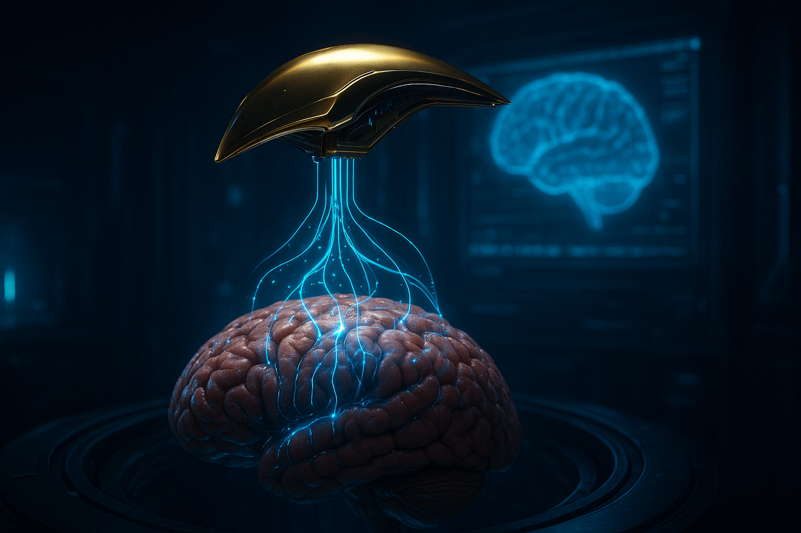

Imagine a person with a prosthetic arm being able to feel touch again — the warmth of a child’s hand, the texture of a wool sweater, or even the sting of a paper cut.
This isn’t science fiction — it’s the new reality of neurotechnology, where artificial skin can already sense pain, pressure, and temperature — and transmit it directly to the brain.
🤖 What Is “Artificial Skin”
Scientists call it electronic dermis (e-skin). It’s an ultra-thin, flexible material — often just 50 micrometers thick — made of silicone, graphene, or self-healing polymers, embedded with millions of micro-sensors that mimic human mechanoreceptors, thermoreceptors, and nociceptors.
These signals go to a microchip, which converts them into electrical impulses, and then — via a neural interface — directly into the human nervous system or the robot’s AI control core.
In other words, the skin doesn’t just “measure pressure” — it feels.
⚙️ How It Works
- Sensory layer: piezoelectric and capacitive sensors detect touch, temperature (±0.1°C), and pain (via damage-detecting micro-cracks);
- Neural encoder: AI translates analog sensations into digital neural patterns identical to biological ones;
- Neurointerface: flexible nanowire arrays or optogenetic fibers transmit signals to peripheral nerves or the somatosensory cortex.
AI plays a key role here — it teaches the system to recognize the type of touch: a soft stroke vs. a sharp prick, to distinguish velvet from sandpaper, and even to “remember” textures for 30 seconds — just like human skin does.
🧠 Breakthrough: Artificial Skin from Seoul University
In 2024, scientists from Seoul National University unveiled NeuroSkin v3 — a material that mimics the sensitivity of human fingertip skin by 95%.
- Detects temperature differences as small as 0.1°C;
- Registers pressure from 0.01 kPa — lighter than a butterfly landing;
- Features sensory memory: can “recall” the texture of an object 20 seconds after contact.
This skin has already been tested on robotic hands and bionic prosthetics. In clinical trials, amputees connected through a Utah Slant Array interface reported sensations described as “almost indistinguishable from real skin” — including the ability to feel a pulse in a loved one’s wrist.
🧬 Artificial Nerves
To transmit touch to the brain, new-generation neurointerfaces are required. Researchers from Stanford and Caltech have created flexible carbon nanotube “nerves” that conduct signals 100 times faster than previous polymer-based versions and integrate seamlessly with living tissue.
In live trials, patients could:
- Feel pressure in real time and adjust grip strength without visual feedback;
- Distinguish between a grape and a cherry by touch alone;
- Experience “phantom warmth” when holding a hot cup — a sensation lost for decades.
This gives people back not only movement, but emotion — the ability to connect through touch.
🦾 When Robots Feel
Artificial skin is used not only in medicine. Robots with e-skin become safer and more empathetic: they can “understand” how firmly they’re holding a human hand, detect micro-damage in materials, and stop instantly upon sensing pain signals.
Industrial manipulators at Tesla’s Gigafactory now use e-skin to:
- Handle fragile battery cells without crushing them;
- Detect micro-cracks in welds by “feeling” surface stress;
- Work alongside humans with zero safety barriers.
⚠️ Problems and Challenges
- Sensors degrade after 6–12 months of continuous use — self-healing polymers are in development;
- Transmitting complex sensations (like “wetness” or “tingling”) requires multi-modal AI encoding;
- And the ethical question — “Can a robot experience pain?” — has sparked global debates on AI sentience.
🔮 The Future
- Prosthetics that restore not only movement but pain, warmth, and tenderness — expected in clinics by 2027;
- Robots that understand the boundaries of human contact and respond with appropriate gentleness;
- Fully “tactile” avatars in the metaverse — where you’ll feel a virtual hug as if it were real.
“When a machine learns to feel, technology finally becomes truly human.” — Dr. Hyeonwoo Lee, lead researcher, Seoul National University